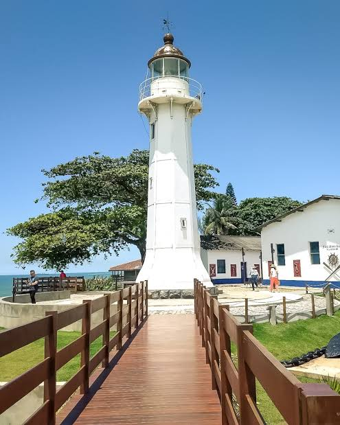

|
|
Vila Velha |
|---|
A cidade mais antiga do Espírito Santo, fundada em 1535. Abriga o histórico Convento da Penha, além de belas praias urbanas e uma forte tradição cultural e gastronômica.

Aqui voce pode realizar o download dos principais pontos turisticos de Vila Velha